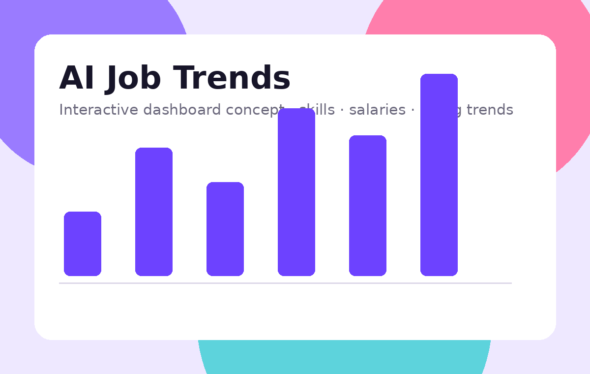
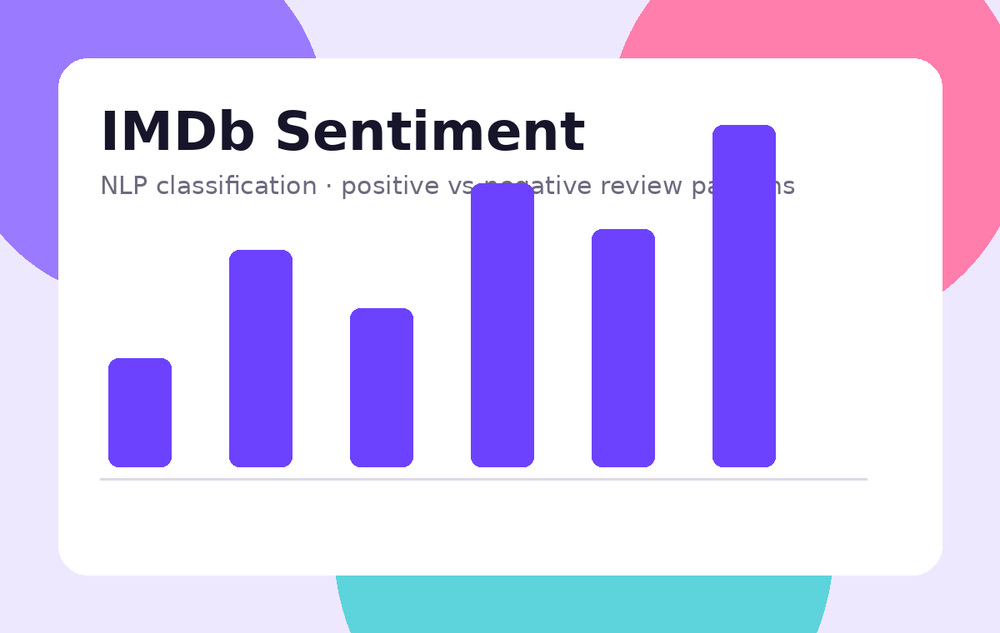

01DASHBOARD · PYTHON · SQL
AI Job Trends Dashboard
Explored job-market data to reveal hiring patterns, in-demand skills, locations, and salary trends across AI roles.
View case study ↗Junior Data Scientist
I build practical data products, uncover meaningful patterns, and translate complex datasets into stories people can act on.
I'm a Junior Data Scientist passionate about using data to solve real-world problems. I enjoy the full journey—from cleaning messy datasets and exploring patterns to building models and communicating results.
My approach is simple: ask better questions, validate assumptions, and make insights easy to understand.
A growing toolkit built around analysis, modeling, visualization, and strong fundamentals.
Data processing, automation & analysis
Cleaning, transformation & exploration
Queries, joins & analytical workflows
Modeling, evaluation & feature work
Charts, dashboards & data storytelling
Selected projects combining analysis, visualization, and machine learning.

01Explored job-market data to reveal hiring patterns, in-demand skills, locations, and salary trends across AI roles.
View case study ↗
02Built a text-classification workflow to identify positive and negative movie-review sentiment.
View case study ↗Investigated survival patterns through demographic, class, fare, and family-related features.
View analysis ↗My journey combines hands-on data science projects with practical industry exposure, continuously building my technical and problem-solving skills.
Building analytical projects, experimenting with ML workflows, and developing portfolio-ready data products.
Building projects with Python, data analysis, machine learning, NLP, dashboards, and practical applications.
Exposure to CRM tools, networking and digitization, FTTH/GSM systems, and basic ONT/OLT and router/switch concepts.
Get the complete overview of my skills, projects, and experience.
Have a project, opportunity, or data problem in mind? I'd love to hear about it.
Notes on data science, ML, and lessons from projects.
A new end-to-end data product is in the works.